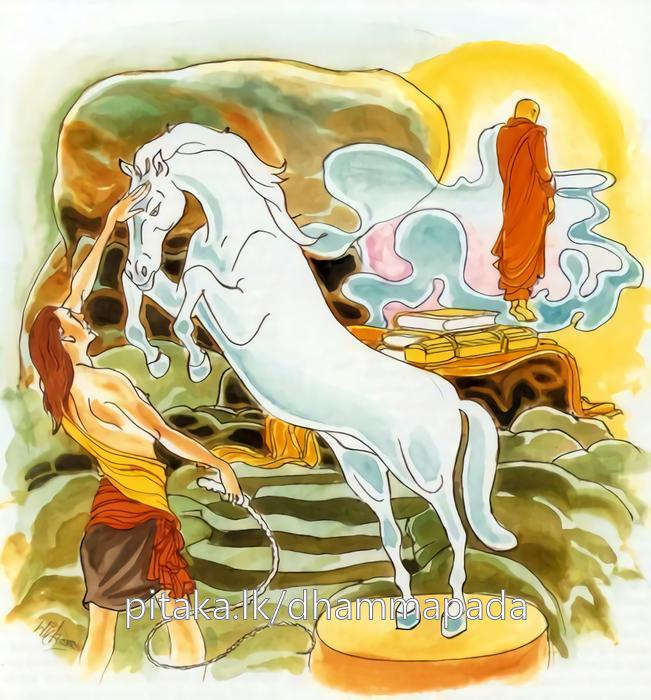

10-10 පිලෝතික ථෙරි පුවත
මෙම කතාව සද්ධර්ම සාගරයෙන් ද කියවන්න.
හිරීනිසෙධො පුරිසො කොචි ලොකස්මි විජ්ජති
යො නින්දං අපබොධති අස්සො භද්රො කසාමිව.
සැමිටිය වළහන්නාවූ (හෙවත් ‘මේ සැමිටියෙන් පහරිණු ලබම් දැ’යි තමා ඇගැ සැමිටිය ගසා නො දෙන්නාවූ), සුශික්ෂිත උතුම් අශ්වයක්හු මෙන් යම් මහණෙක් තෙම නින්දාව (තමා සතන්හි උපන් අකුශල විතර්කය) තම සන්තානයෙන් පහ කෙරේ ද, එබඳු වූ (මා වැනි ජාතිග්රෝත්ර සම්පන්න ඥානවෘද්ධ වයෝවෘද්ධ බහුශ්රැත ශ්රද්ධාසම්පන්න කුලපුතක්හට අකුශලවිතර්ක වශග වීම තරම් දැ යි මෙසේ) පාපයෙහි ලජ්ජායෙන් අකුශලවිතර්ක දුරු කරන පුරුෂයෙක් සත්ත්වලෝකයෙහි කිසිවෙක් ම ඇත්තේ ය (සුලභ නො වන්නේ ය).
අස්සො යථා භද්රො කසානිවිට්ඨො
ආතාපිනො සංවෙගිනො භවාථ
සද්ධාය සීලෙන ච විරියෙන ච
සමාධිනා ධම්මවිනිච්ඡයෙන ච
සම්පන්නවිජ්ජාචරණා පතිස්සතා
පහස්සථ දුක්ඛමිදං අනප්පකං.
(කිසි ප්රමාද හේතුවෙකින්) සැමිටියෙන් පහරිණ ලද, (මමත් සැමිටියෙන් පහර ලදිම් දැ යි එතැන් පටන් අප්රමාද වැ වීර්ය්ය කරන්නාවූ සුශික්ෂිත) උත්තම අශ්වයක්හු මෙන් විර්ය්යවත් වවු. සංසාරයෙහි උදේවගබහුල වවු. (මෙසේ වසන) තෙපි (ලොවීලොවුතුරා විසින් දෙවැදෑරුම්) සැදැහැයෙන් ද, සිවු පිරිසිදු ශීලයෙන් ද, (වත් පිළිවෙත් පුරණ හදාරණ පිරිවහන) කායිකවිර්ය්යයෙන් ද, කෙලෙසුන් තවන චෛතසික වීර්ය්යයෙන් ද, (රූපාරූප අෂ්ටසමාපත්ති සංඛ්යාත) සමාධියෙන් ද, (කාරණාකාරණ දැන්ම ලකුණු කොටැති) ධර්මවිනිශ්චයයෙන් ද (හෙවත් විදර්ශනාප්රඥායෙන් ද) සමන්විත වැ, සම්පූර්ණ වූ විද්යාචරණ ඇති වැ, (සියලු කුදුමහත් කටයුත්තෙහි එළැඹ සිටි සිහි ඇති බැවින්) ස්මෘතිසම්පන්න වැ, අනල්ප වූ (ඉතා බොහෝ වූ) මේ සසර දුක දුරු කරවු.

“හිරිනිසෙධෝති” - යන මෙම ධර්ම දේශනය ශාස්තෲන් වහන්සේ සැවත් නුවර දෙව්රම වැඩ සිටිය දී පිලෝතික තෙරුන් ඇරඹ දේශනා කළහ. එක දිනෙක ආනන්ද තෙරුන් එක් රෙදි කැබැල්ලක් ඇඳ කබලක් අතින් ගෙන ඇවිද යන දරුවෙකු දැක ඔබ මෙසේ ඇවිදිමින් ජීවත් වෙනවාට වඩා පැවිදිබව උත්තරීතර නොවේදැයි විමසු විට - ස්වාමීනි කවර කෙනෙක් නම් මා පැවිදි කරන්නේදැයි පැවසු කල්හි මම පැවිදි කරන්නෙමියි ඔහු රැගෙන ගොස් සියතින් නාවා කර්මස්ථානයක් දී පැවිදි කළහ. ඔහු වනාහි තමන් පළමු ඇදිවත දිගුකර විචාරා බලන්නේ පෙරහනක් කිරීමට තරම් වු දෙයක්වත් ගැනීමට කිසි පෙදෙසක් නොදැක කබල සමඟ වස්ත්රය එක් ගස් අත්තක තැබුවේය. ඔහුද පැවිදිව ලබන ලද උපසම්පදා ඇත්තේ බුදුන් වෙනුවෙන් ලැබෙන ලාභසත්කාර පරිභෝග කරමින් වටිනා සිවුරු ඇඳ පැළඳ තරවූ සිරුරක් ඇතිව හැසිරෙන්නේ කළකිරී මහජනයා ශ්රද්ධාවෙන් දෙන දේ පරිභෝග කිරීමෙන් කවර ප්රයෝජනයක්දයි සිතා මගේම ඇඳුම් අදිමියි. එතැනට ගොස් වස්ත්රය ගෙන තමන්ටම අවවාද කරගනිමින්. ලජ්ජා නැත්ත, මෙබදු වටිනා සිවුරු අඳින තැන අත්හැර මේ රෙදි කැබැල්ල හැඳ කබල අතට ගෙන සිඟමනේ යාම ගැන සිතයිද? එම අරමුණ කොට තමන් තමන්ටම අවවාද දී සිත සනසාගෙන එම රෙදිකඩ එතනම තබා නැවත විහාරයටම ගියේ දින කීපයකට පසුද නැවත ද කළකිරී එසේ කියා නැවතුනි. මෙසේ නැවත නැවත යනු දැක භික්ෂූන් වහන්සේලා ඇවැත්නි කොහේ යන්නේ දැයි විමසති. එවිට ආචාර්යවහන්සේ ළඟට යමියි කියා මේ අයුරින් තමන්ගේ රෙදිකඩට අරමුණු කොට ආත්මය නිශේධනය කොට දින කීපයකින්ම රහත් බවට පත්වුනි. භික්ෂූන් වහන්සේලා ඇයි ඇවැත්නි දැන් ආචාර්ය වහන්සේ වෙත නොයන්නේද? මේ ඔබේ විවෘත (පළපුරුදු) මාර්ගය නේදැයි විමසුහ. එහිදී ඇවැත්නි ගුරුවරයා සමඟ ඇලීම ඇතිවිටම එහි ගියෙමි දැන් මගේ සංසර්ගය සිඳ ඇත්තෙමි. (එකට ඇසුර) දැන් උන් වහන්සේ වෙත නොයමි. භික්ෂූන් වහන්සේලා මේ කථා පුවත තථාගතයන් වහන්සේට දැන්වුහ.
ස්වාමීනි පිලෝතික තෙරුන් අනෙකක් කියයි. මහණෙනි කුමක් කියයිද? ස්වාමීනි මෙයයි පැවසුවිට එසේය ඇවැත්නි මගේ පුත්රයා (රහත් භික්ෂුව) ඇල්මක් ඇති විට ගුරුවරයා ළඟට ගියේය. දැන් ඔහුගේ ඇලීම සිඳ දවා ඇත. තමාම තමා වළක්වා රහත් බවට පත්වූයේ යයි පවසා මේ ගාථාව පැවසුහ.
“කස පහර වළකන උතුම් අසෙකු ලෙස යම් කෙනෙක් නින්දාව දුරුකර ගනීද ලජ්ජාවෙන් අකුශලයන් දුරුකරන කිසියම් පුද්ගලයෙක් ලොව ඇත.”
කසපහර වළකා - ලජ්ජවෙන් ම හික්මුණු
අසෙකු මෙන් ඒ තෙම සිටී දුරුකොට ඇලුම් සසරේ
ලැබ කස පහර ලජ්ජාවෙන් නොවන පමා
අස් පැටවෙකු වගේ සිත කය වචන දමා
විරියද සමාදිය විදසුන් නුවණ යොමා
සැදැහෙන් සුසිල් වත් වී ලද යුතුය අමා
කසයෙන් තලන ලද උතුම් අයෙකුසේ වීර්ය ඇත්තේ ද සසර කළකිරීම ඇත්තේද වෙව්. ශ්රද්ධාවෙන්ද සීලයෙන්ද වීර්යයෙන්ද සමාධියෙන් ද විදර්ශනා ප්රඥාවෙන්ද සම්පූර්ණ වූ විද්යාචරණ ඇතිව සිහියෙන් යුතුව බොහෝ වු මේ සසර දුක දුරුකරමි.
එහි තමා තුළ උපන් අකුශල විතර්ක ලජ්ජා නැති කරයි යනුවෙන් හීරීනිසෙධො නම් වේ. කොචි ලෝකස්මිං යනු මෙබඳු දුර්ලභ කිසිවෙක් ලොව විද්යාමාන වේ. යො නින්දති - අප්රමාදීව ධර්ම කරන තැනැත්තා තමන්ට ඇතිවූ නින්දාව බැහැර කරමින් අවබෝධ කර ගනිමුයි අපබොධති කසාම්වාති යම්සේ යහපත් අශ්වයා තමා කෙරෙහි වැටෙන කස පහර දුරුකරයි. තම සිරුරට වැදෙන්නට ඉඩ නොදේ. යමෙක් එසේම නින්දාවක් ලැබීමට ඉඩ නොතබයි ද එවැන්නෝ දුර්ලභය. යන අරුතයි. දෙවන ගාථාවේ මේ සංක්ෂේප අරුතයි. මහණෙනි යම්සේ යහපත් තරුණ අශ්වයා ප්රමාදයට පැමිණ කසයෙන් පහර නැවත්වීද මමද එලෙස කසයෙන් පහර ලදුයේ පසුකලෙක එලවන්නේය යි සංවේගයට පත් වේද?
මෙසේ සිතා එලෙස තෙපිද කෙලෙස් තවව්. හැගුම්බර වව්. මෙලෙස ලෞකික ලෝකෝත්තර දශවිධවූ ශ්රද්ධාවෙන් ද සිටි පිරිසිදු සිල්වලින් ද කායික චෛතසික වීර්යයෙන්ද යුතුව අෂ්ට සමාපත්ති ඤාණයෙන් කරුණු නොකරුණු දන්නා ලක්ෂණය ධර්ම විනිශ්චයෙන් ද යුතුව ත්රිවිද්යා අෂ්ටවිද්යා පසළොස් වර්ණ ධර්ම සම්පත්තියෙන් යුක්තව විද්යා චරණයන්ගෙන් යුතුව එළඹ සිටි සිහියෙන් මේ අපමණ සසර දුක දුරු කරව් දේශනය අවසානයේ බොහෝ දෙන සෝවාන් ඵලයට පත්වුහ.